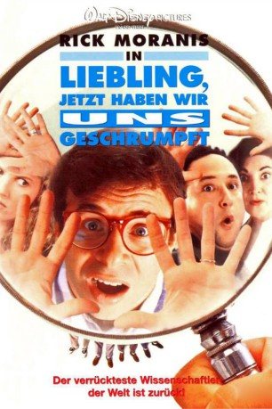

#9236 Liebling, jetzt haben wir uns geschrumpft!
Alternativ: Honey, We Shrunk Ourselves!
 
 IMDB-Wertung: 4.9 / 10
IMDB-Wertung: 4.9 / 10  Metascore: 0
Metascore: 0 
Als ob das Schrumpfen der Kinder noch nicht gereicht hätte. Jetzt hat Wayne auch noch versehentlich sich selbst, seinen Bruder und beide Ehefrauen auf Mikrogröße geschrumpft. Nur ihre Kinder können ihnen noch helfen. Und beim Versuch, sich ihnen bemerkbar zu machen, rasen sie in einem Spielzeugauto über eine Spielzeugrennbahn, fliegen in einer Seifenblase durchs Haus und landen versehentlich in einer Schüssel mit Dip-Sauce, während die Kinder in der vermeintlichen sturmfreien Bude eine Party feiern!
Jahr: 1997
Dauer: 71 Minuten
FSK: 0
Land: USA Studio: ABCTonspuren: DD2.0 - ,
Untertitel:
Auflösung: 1080p (1428x1080) Größe: 2990 MB
Genre: Action, Sci-Fi, Komödie, Abenteuer, Familie
Regisseur: Dean Cundey
Drehbuch: Stuart Gordon
Soundtrack: Michael Tavera
Darsteller:
Datei: X:\4-Tetralogie(A-K)\Geschrumpft\Liebling, jetzt haben wir uns geschrumpft! (1997, FSK0, 1428x1080).mkv seit 20.07.2018
Festplatte: HD Collection-3(N-Z)-6(A-Z)
 Es gibt insgesamt 7 Filme in der Gruppe '4-Tetralogie(A-K)\Geschrumpft'
Es gibt insgesamt 7 Filme in der Gruppe '4-Tetralogie(A-K)\Geschrumpft'